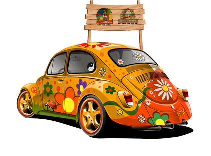

Coming by car from Mumbai, take Western Express Highway (WEH), turn left to Kashimira and drive down to Mira-Bhayander road. Our signages will guide you to reach the park. It will take around 30-45 minutes from Kashimira. Enjoy the beautiful landscapes with ups and downs, while you drive.
Or else, you can take MBBT Bus no. 4 from Bhayander bus depot that takes you directly to our parks..

ENJOY SCENIC FERRY RIDE (From Mumbai) :
From Marve-Malad/ Gorai-Borivali, EsselWorld's own ferries are available to take you across to the park.
Ferries are available every 15 minutes from Gorai-Borivali. Ferries from Marve-Malad to park are available every 30 minutes, but will not play from 3pm to 6pm.
If you wish your ferry ride to last long, then we suggest you to take it from the Marve-Malad, it spreads over all of 30 minutes. (subject to tide conditions)
Ferry ticket charges in addition to normal entry ticket at Rs.70 per head (rates subject to change without prior notice).